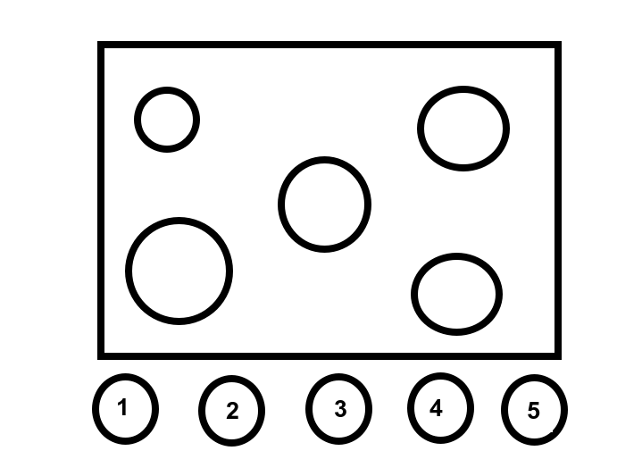

Meu nome é Carlos Oliveira. Desenvolvi este projeto buscando criar uma interface mais segura, intuitiva e acessível para diferentes perfis de usuários. Acredito que o design deve ser inclusivo e considerar as necessidades de pessoas com diferentes limitações físicas, sensoriais e cognitivas.

Esta interface utiliza botões maiores, alto contraste, relevo, braille para facilitar o uso por pessoas com deficiência visual, auditiva, idosos e cadeirantes.